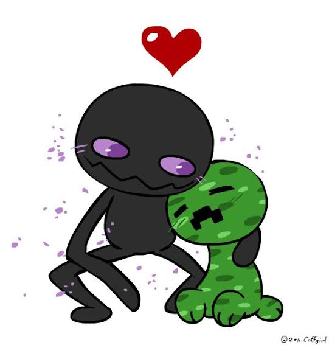
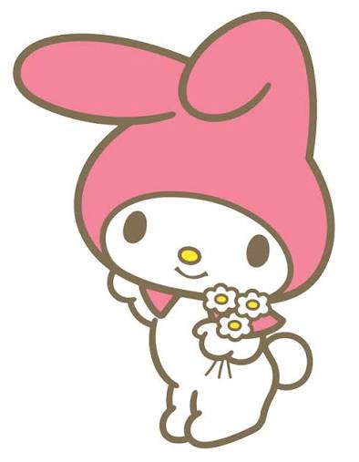
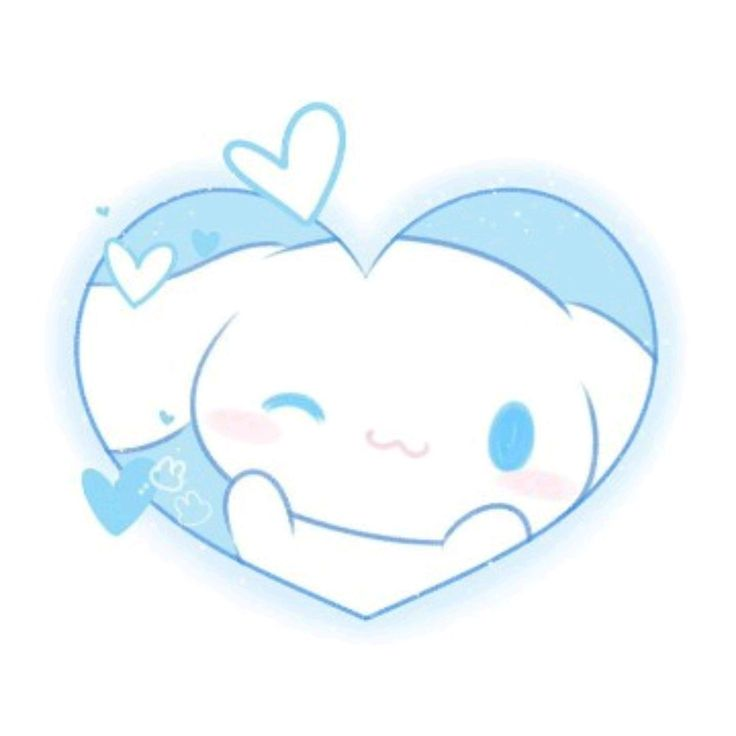
Hola mi vida, gracias por permitirme ser tu novio más tiempo, en serio muchas gracias amor, no sabes cómo me hace feliz estar contigo, no sabes lo enamorado que estoy por ti estos días, en serio te amo mi amor. El Uriel nunca te haría algo como esto ajajajsj uwu enserio me gusta demasiado estar contigo, aun que me enoje demsiado, me estrese por k me molestas maldita, pero aun asi me gustas demasiado mi vida, y por eso te amo muto muto,
Enserio me esfuerzo demasiado para hacerte feliz y todo este bien, porque es lo que mereces, y mereces todo lo lindo de este mundo,y yo te lo dare y te hare realidad todos tus sueño mi vida, siempre que estemos juntos, podremos lograr todo juntos,porque no se si sabias pero, soy tu novio, y te dare bien duro como cajon que no cierra
Siempre que te veo me saco de onda, te observo te analizo, te barro con la mirada y me doy cuenta que, jamas podre amar a otra persona con la misma intensidad con la que te amo a ti, en ti encontre todo lo que alguna vez soñe *avre parentecis* ya te recalke muchas veces que eres lo que siempre eh buscado *cierra parentecis* y aun asi cambiaste y me sigues gusntamo mucho mi vida, enserio me gustas mucho, ya ceas prostituta, youtuber, transexual, un pato, una cabra, una mesa, un dildo, un garrafon electropura, te seguire amando amor.
Ay amor pienso en ti y me sale una sonrricita, me gusta la manera en la que me hablas, me tratas, ME ALEGRAS EL DIA con solo escuchar tu voz, tus estupideces k ce te ocurren y las que ciempre dices, se ME KEDAN GRABADAS TODO EL PUTO DIA, y las repito en mi mente, y me sakas una sonrrisita, asjfja me gusta presumirte con carlos o con la banda, cuando me enseñan a sus novias o novios siempre les respondo con: "ajsdf mi novia una vez me dijo eso pero le kedo mejor a ella" *avre parentecis* non les digo eso excatamente pero me encargo de opacarlos *cierra parentecis*
a pesar de que no estas conmigo, te siento conmigo, siento que estas conmigo, cuando duermo contigo, siento como estas alado de mi, subiendome el pie, pateandome, tocandome la cara o mas seguro mis orejas, te siente en verdad muy cerca, siento tu mirada, me gusta cerrar mis ojos y imaginar que estas a mi lado, AJDJFAS ni verte a los ojos podria cielo, ME ENCANTA COMO ME HACES SENTIR, AHORA MISMO ESTOY LLORANDO xd
Que bonito encontrarte en ese grupo de wazap, no me arrepiento de nada amor, GRACIAS POR SER MI NOVIA
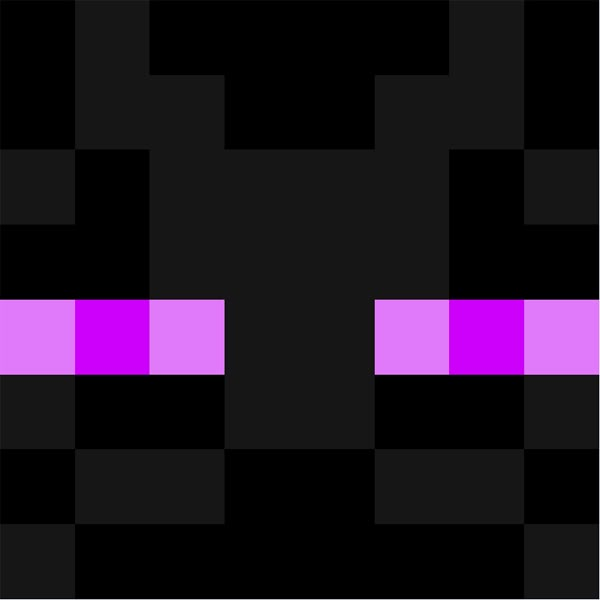
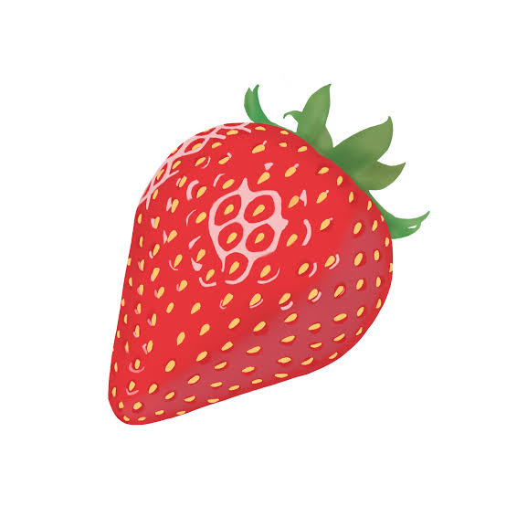
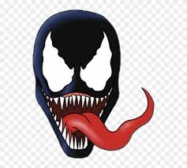
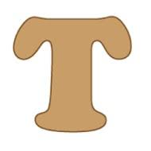
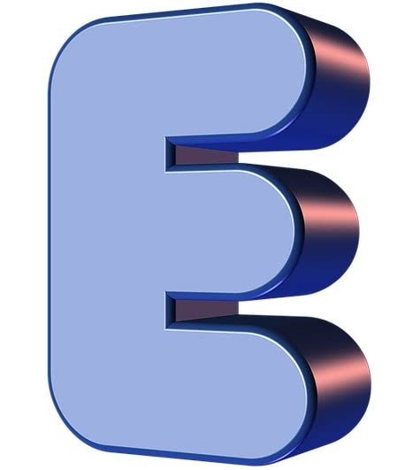
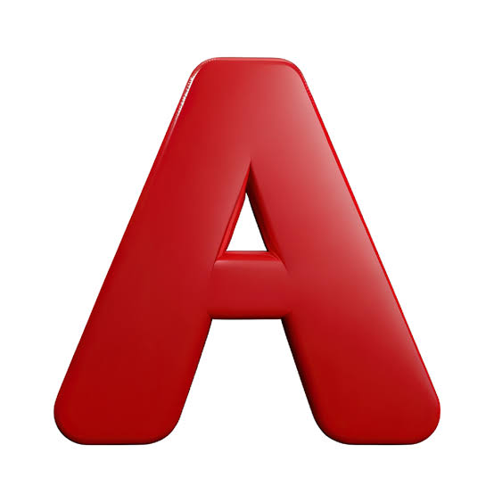
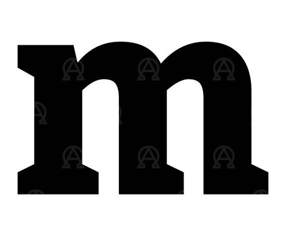
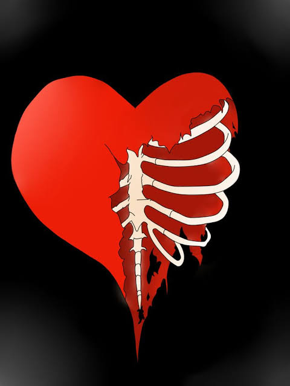
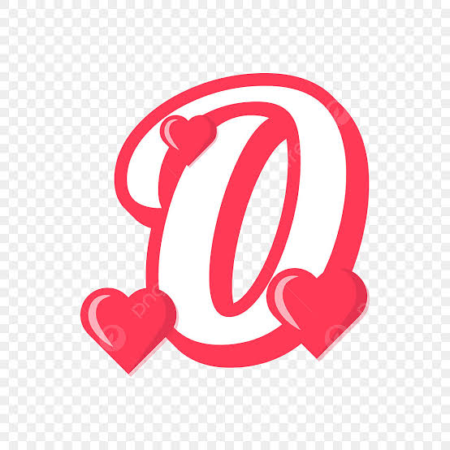